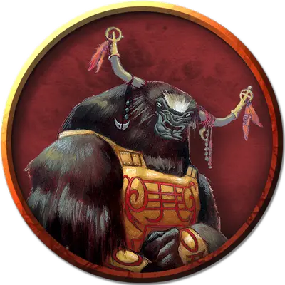

Вождь Карта-Кая
Chief Kartha-Kaya
Большой Монстр, нейтрально-злой

Класс Доспеха 11 (кожаный доспех)
Хиты 70 (8к10 + 26)
Скорость 30 футов
| мод | спас | ||
|---|---|---|---|
| СИЛ | 18 | +4 | +4 |
| ЛОВ | 11 | +0 | +0 |
| ТЕЛ | 15 | +2 | +2 |
| мод | спас | ||
|---|---|---|---|
| ИНТ | 14 | +2 | +2 |
| МДР | 15 | +2 | +2 |
| ХАР | 14 | +2 | +2 |
Навыки Выживание +4, Обман +4
Чувства пассивное Восприятие 12
Языки Общий, Йикариа
Опасность 4 (1100 опыта)
Бонус мастерства +2
Особенности
Одержимость (восстанавливается после короткого или длительного отдыха). Яколюд пытается волшебным образом овладеть гуманоидом или гигантом. Яколюды должен коснутся цели в течении короткого отдыха, или попытка провалиться. В конце отдыха, цель должна совершить спасбросок Телосложения Сл 12 или стать одержимым яколюдом, который исчезает со всем, что он носит и во что одет. До конца одержимости, цель без сознания, теряет контроль над телом и безучастно к окружению. Яколюд теперь контролирует тело и не может быть целью любой атаки, заклинания и других эффектов; при этом он сохраняет Интеллект, Мудрости и Харизму, а также Бонус Мастерства. В остальном используются параметры цели за исключением знаний, классовых навыков, черт и личных умений.
Одержимость длиться до тех пор, пока хиты носителя не падают до 0, яколюд действием оканчивает эффект, или яколюда заставляют покинуть тело носителя с помощью эффекта такого заклинания, как например рассеивание зла и добра [dispel evil and good]. Когда одержимость заканчивается, яколюд появляется в свободном пространстве, в пяти футов от носителя, ошеломлённым до конца своего следующего хода. Если носитель умирает будучи одержимым, яколюд также умирает, и тело его не появляется снова
Действия
Мультиатака. Яколюд совершает две атаки, либо двуручным мечом, либо длинным луком.
Двуручный меч Язык пламени. Рукопашная атака оружием: +6 к попаданию, досягаемость 5 фт., одна цель. Попадание: 18 (4к6+4) рубящего урона. Если меч пылает, он наносит дополнительный урон 7 (2к6) огнем при попадании.
Длинный лук. Дальнобойная атака оружием: +2 к попаданию, дистанция 150/600 фт., одна цель. Попадание: 9 (2к8) колющего урона.
Описание
Яколюди, известные между собой как Йикария («Счастливые Избранные» на их языке), - гуманоиды размером с огра с изогнутыми рогами и суровым выражением лица. Их громадные тела покрыты густым мехом и волосами, и многие посторонние не могут отличить самцов от самок.
Слуги забытого бога. Яколюди - создания злобного божества, которого они называют Забытым Богом. Поклонение этому безымянному божеству направляет их жизнь. Божество принимает форму мужчины-йикарии, но его лицо превращается в безликую маску. Божество умиротворяется жертвоприношением, которое его последователи совершают, захватывая гуманоидов и предавая их смерти огнем (жертвоприношение), землей (захоронение живьём), водой (утопление) или воздухом (сбрасывая жертв с большой высоты). Жертвоприношения обеспечивают милосердие Забытого Бога.
Забытый Бог на время позволил яколюдям поработить Дао. Говорят, что Забытый Бог отправился на Элементный План Земли и, хитростью и обманом, победил Великого хана дао. Цена этого поражения была высока: дао были вынуждены служить Забытому Богу и его приспешникам - и им было запрещено нападать на них - «тысячу лет и год». Приговор с тех пор истек, и яколюди больше не могут призывать Дао, как когда-то, но страх перед Забытым Богом удерживает дао от мщения.
Общество яколюдов. Яколюди живут в уединенных поселениях, защищенных от страшного воздействия природы, таких как горные долины, возвышающиеся плато и оазисы в пустыне. Посторонние, наткнувшиеся на анклав яколюдов, обычно удивляются и рады обнаружить то, что кажется утопией, и яколюди поддерживают этот образ до тех пор, пока незнакомцев не разоружат и не поймают.
В своих, казалось бы, идиллических убежищах яколюди правит железными кулаками, и, несмотря на всю свою образованность и культуру, они являются чрезвычайно злыми повелителями. Яколюды заботятся о своих несчастных пленниках лишь постольку, поскольку живой полезнее мертвого, а заставить пленного работать легче, чем трудиться самому. Дело не в том, что яколюди ленивы - совсем наоборот. Они просто считают, что большинство чёрных задач ниже их уровня.
У яколюдов есть тяга к обучению, особенно когда речь идет о секретах элементальной магии и темных знаний, которые могут служить разврату или господству над другими. Знания, которые яколюды не могут получить или использовать, должны быть уничтожены. Несентиментальные по своей природе родители-яколюди отправляют детей в общие ясли, когда их отнимают от груди, чтобы никогда больше не узнать их. Яколюди не чувствуют преданности своим семьям - только своему богу и расе.
Меняющие Кожу. Самое устрашающие оружие яколюдов это способности магическим образом заползать под кожу других существ, контролировать тело и разум. Яколюди используют эту способность, чтобы шпионить за врагами, грабить их, убивать их лидеров и похищать их детей.